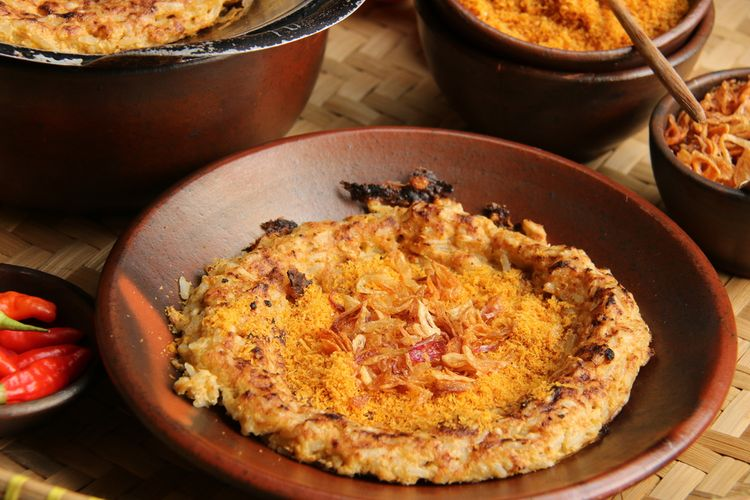
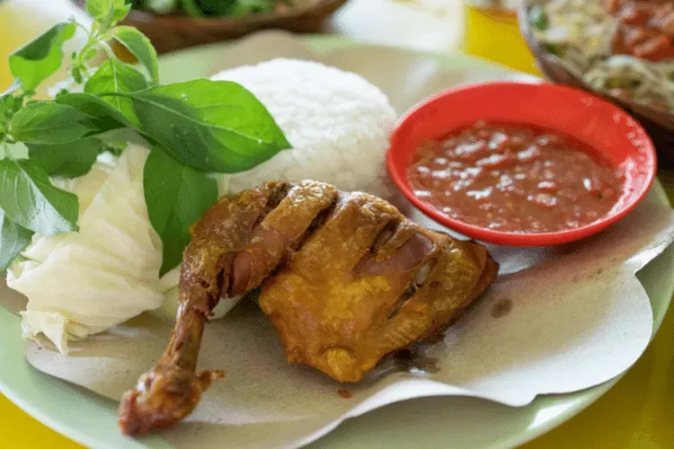

Jakarta Foods

Kerak Telor
One of Jakarta's classics. Whenever you go to monas or anywhere in central Jakarta you HAVE to get one of these.
#kerak_telor
#makananMonas
#uenakCik

Pecel Ayam Jakarta
I know pecel ayam is a general Indonesian food that you can't really pinpoint to a certain location but pecel ayam in Jakarta just hits different compared to ones in other cities. (Speaking from experience)
#kangenn
#pecel_ayam_jaktim
#mm_laper

Soto Betawi
Another Jakarta classic. Whenever you think of Jakarta's trademark dishes it's the Betawi Stew.
#betawimomen
#hood_classic
#klo_sakit_makan_iki